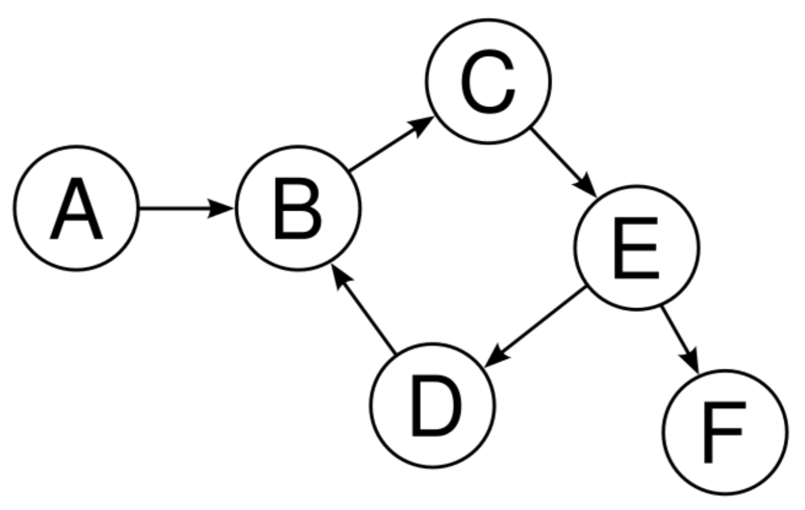
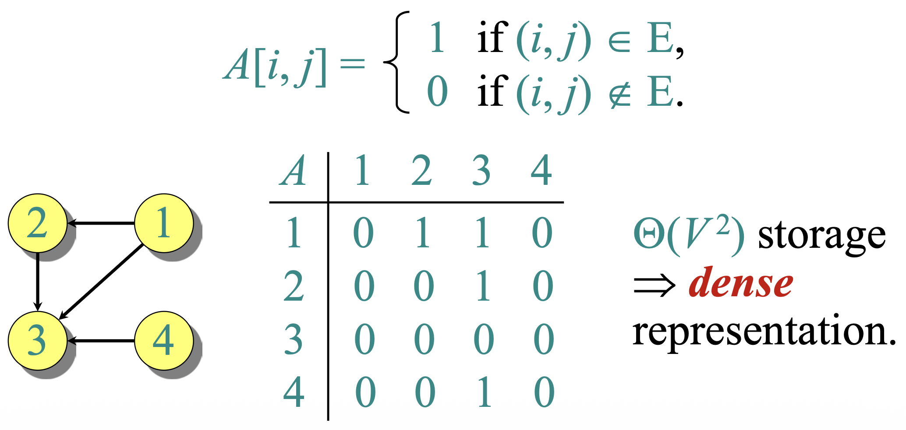
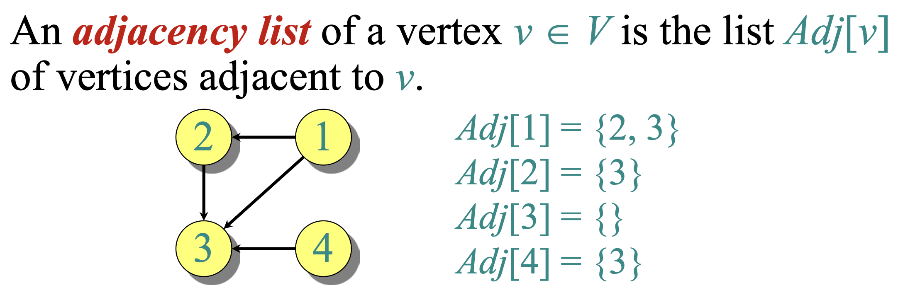
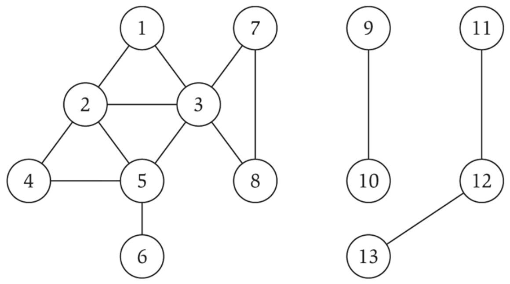

- A directed graph (digraph) \(G=(V,E)\) has a vertex set \(V\) and an edge set \(E \subseteq V\times V\).
- An edge \(e=(u,v)\) goes from \(u\) to \(v\). Self-loops \(u=v\) may or may not be allowed.
- An undirected graph has \(E\) as unordered pairs \(\{u,v\}\).
- Edges may store additional attributes (weights, lengths, labels).
- Maximum number of edges is \(O(|V|^2)\) in both directed and undirected cases.
GRAPHS ARE EVERYWHERE
| Domain | Nodes | Edges |
|---|
| Transportation | Airports | Nonstop flights |
| Communication | Computers, hubs, routers | Physical links |
| Web | Pages | Hyperlinks |
| Citation | Articles | References |
| Social | People | Friendships, follows, messages |
| Programs | Functions / modules | Calls, control-flow |
PATHS AND CONNECTIVITY
- Path: sequence \((u,n_1),(n_1,n_2),\dots,(n_{k-1},v)\) of edges in \(E\). Direction matters in digraphs.
- Simple path: no vertex repeats.
- Undirected graph is connected if every \(u,v\in V\) have a path.
- Directed graph is strongly connected if \(u\rightsquigarrow v\) and \(v\rightsquigarrow u\) for all pairs.
CYCLES
A cycle is a path \(v_1,\dots,v_{k-1},v_k\) with \(v_1=v_k\), \(k>2\), and \(v_1,\dots,v_{k-1}\) distinct.

Example cycle: b-c-e-d.
TREES VS GRAPHS
| Feature | Tree | Graph |
|---|
| Structure | Hierarchical | General |
| Cycles | None | May exist |
| Connectivity | Always connected | May be disconnected |
| Edges | \(n-1\) for \(n\) nodes | Varies up to \(O(n^2)\) |
| Paths | Unique between nodes | Possibly multiple |
ADJACENCY MATRIX
- For \(V=\{1,\dots,n\}\), matrix \(A[1..n,1..n]\) with
\(A[i,j]=1\) if \((i,j)\in E\) and \(0\) otherwise.
- Space: \(\Theta(|V|^2)\) — a dense representation.

Adjacency matrix encodes edges as 1s; zeros elsewhere.
ADJACENCY LIST
- Adj[v] is the list of vertices adjacent from \(v\).
- Space: \(\Theta(|V|+|E|)\) — a sparse representation.

Example: Adj[1]={2,3}, Adj[2]={3}, Adj[3]={}, Adj[4]={3}.
DEGREES & HANDSHAKING LEMMA
- Undirected: \(|\text{Adj}[v]|=\deg(v)\).
- Directed: out-degree is \(|\text{Adj}[v]|\).
- Handshaking Lemma (undirected): \(\sum_{v\in V}\deg(v)=2|E|\).
IN-DEGREE IN DIRECTED GRAPHS
- Out-degree: number of edges leaving \(v\); equals \(|\text{Adj}[v]|\).
- In-degree: number of edges entering \(v\); formally \(\deg^{-}(v)=|\{u\in V : (u,v)\in E\}|\).
- To compute in-degree in adjacency lists: for each \(u\in V\), for each \(v\in \text{Adj}[u]\), increment \(\text{indegree}[v]\).
- In adjacency matrix \(A\), \(\deg^{-}(v_i)=\sum_{j=1}^n A[j,i]\).
- Total time complexity: \(O(|V|+|E|)\).
EXPLORING A GRAPH
Given \(s,t\in V\), is there a path from \(s\) to \(t\)? Explore all vertices reachable from \(s\).
- Breadth-First Search (BFS): layer-by-layer by distance from \(s\).
- Depth-First Search (DFS): dive along a path before backtracking.
BFS: INTUITION
- Start at \(s\); grow a frontier in "waves".
- Levels \(L_0=\{s\}, L_1\)= neighbors of \(s\), \(L_{i+1}\)= unseen vertices adjacent to \(L_i\).
BFS visits vertices in nondecreasing distance from \(s\).
BFS TREE
A BFS tree is the spanning tree built by the BFS algorithm, showing parent-child relations between vertices as discovered.
- The root is the source vertex \(s\).
- Each vertex's parent is the vertex that first discovered it.
- The path from the root to any vertex in the BFS tree is the shortest path in \(G\) (by number of edges).
LEVEL PROPERTY
If \(T\) is a BFS tree of \(G=(V,E)\) and \((x,y)\in E\), then the levels of \(x\) and \(y\) differ by at most 1.
DATA STRUCTURES
- level[ ] or d[ ] for distances (or parent pointers).
- Queue Q for the wavefront (FIFO).
- Tree T via parent pointers or edge set (optional for paths).
STRATEGY
- Initialize all distances to \(\infty\); set \(d[s]=0\); enqueue \(s\).
- While \(Q\) nonempty: dequeue \(u\); for each \(v\in \text{Adj}[u]\): if \(d[v]=\infty\), set \(d[v]=d[u]+1\) and enqueue \(v\).
BFS(G = (V, E), s)
for each u in V − {s}:
d[u] = ∞
d[s] = 0
Q = empty queue
ENQUEUE(Q, s)
while Q is not empty:
u = DEQUEUE(Q)
for each v in Adj[u]:
if d[v] == ∞:
d[v] = d[u] + 1
ENQUEUE(Q, v)
CONNECTED COMPONENTS
- Connected component: a maximal set of vertices that reach each other.
- In an undirected graph, BFS from \(s\) discovers exactly the component containing \(s\).

Each BFS run identifies one component; repeat from unvisited vertices.
Goal: Explore a graph deeply along each branch before backtracking; record discovery/finish times, classify vertices by color, and analyze complexity.
- Maintain a global time counter.
- For each vertex \(v\):
- Timestamps: \(v.d\) (first discovery), \(v.f\) (finish time).
- Color \(v.\text{color}\): white (unexplored), gray (in process), black (finished).
- Parent pointer \(v.\pi\) in the DFS tree.
- Colors during search:
- white: undiscovered
- gray: discovered but not finished
- black: finished (all reachable vertices explored)
- Timestamps are unique in \(\{1,\dots,2|V|\}\).
- For every vertex \(v\): \(1 \le d(v) < f(v) \le 2|V|\).
STRATEGY
- Initialize all vertices to white; set \(\text{time}=0\).
- Iterate over vertices; when a white vertex \(u\) is found, start DFS-VISIT(\(u\)).
- DFS-VISIT:
- Increment \(\text{time}\), set \(u.d\), color \(u\) gray.
- Recursively visit each white neighbor \(v \in \mathrm{Adj}[u]\).
- On return, color \(u\) black, increment \(\text{time}\), set \(u.f\).
DFS(G):
for each u in G.V:
u.color = WHITE
u.π = NIL
time = 0
for each u in G.V:
if u.color == WHITE:
DFS-VISIT(G, u)
DFS-VISIT(G, u):
time = time + 1
u.d = time
u.color = GRAY
for each v in G.Adj[u]:
if v.color == WHITE:
v.π = u
DFS-VISIT(G, v)
u.color = BLACK
time = time + 1
u.f = time
As the search progresses, each vertex receives unique discovery/finish times satisfying \(d(v) < f(v)\). Colors transition white → gray → black.
ANALYSIS
(adjacency list implementation)
- Initialization loop: \(O(n)\).
- Each vertex becomes gray and black exactly once: total vertex work \(O(n)\).
- For each vertex \(u\), scanning \(\mathrm{Adj}[u]\) costs \(O(\deg(u))\).
- Total edge scans: \(\sum_u \deg(u) = m\).
- Total: \(O(m + n)\).
QUESTION
Task: Given directed \(G\), find a cycle if one exists.
Hint: Use DFS.